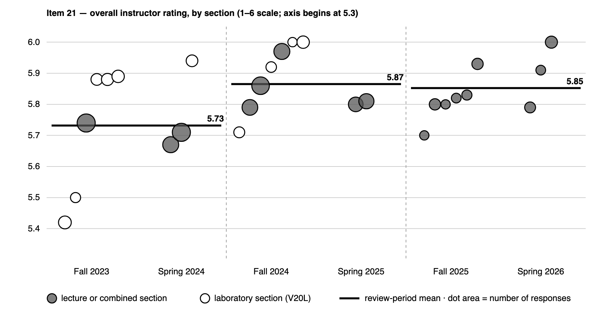

Student Evaluations
The instrument
The district's Student Evaluation of Faculty instrument scores twenty-one rated items on a 1–6 scale. The figure reported throughout this page is item 21, "Overall, how would you rate this instructor?" Every number comes from the per-section report PDFs, and response counts are given for each section so the figures can be checked.
Across twenty-seven sections and six terms: 521 responses from 849 enrolled students, a 61.4% response rate, and an overall mean of 5.81.
By section
| Term | Course | CRN | Responses | Enrolled | Rate | Overall |
|---|---|---|---|---|---|---|
| Fall 2023 | V20 (now V101) | 70259 | 38 | 52 | 73.1% | 5.74 |
| Fall 2023 | V20L (now V101L) | 70249 | 19 | 24 | 79.2% | 5.42 |
| Fall 2023 | V20L | 70687 | 16 | 21 | 76.2% | 5.88 |
| Fall 2023 | V20L | 70968 | 17 | 23 | 73.9% | 5.88 |
| Fall 2023 | V20L | 72915 | 18 | 25 | 72.0% | 5.89 |
| Fall 2023 | V20L | 72923 | 12 | 24 | 50.0% | 5.50 |
| Spring 2024 | V20 | 31060 | 38 | 54 | 70.4% | 5.71 |
| Spring 2024 | V20 | 31635 | 30 | 54 | 55.6% | 5.67 |
| Spring 2024 | V20L | 32197 | 16 | 23 | 69.6% | 5.94 |
| Fall 2024 | V20 | 70674 | 36 | 47 | 76.6% | 5.86 |
| Fall 2024 | V20 | 70714 | 30 | 51 | 58.8% | 5.97 |
| Fall 2024 | V20 | 72251 | 29 | 50 | 58.0% | 5.79 |
| Fall 2024 | V20L | 70249 | 14 | 23 | 60.9% | 5.71 |
| Fall 2024 | V20L | 70267 | 13 | 21 | 61.9% | 5.92 |
| Fall 2024 | V20L | 70775 | 10 | 26 | 38.5% | 6.00 |
| Fall 2024 | V20L | 70927 | 18 | 24 | 75.0% | 6.00 |
| Spring 2025 | V01B (now V120B) | 39702 | 27 | 48 | 56.2% | 5.81 |
| Spring 2025 | V20 | 31635 | 25 | 57 | 43.9% | 5.80 |
| Fall 2025 | V101 | 70674 | 15 | 23 | 65.2% | 5.93 |
| Fall 2025 | V101 | 70714 | 15 | 24 | 62.5% | 5.80 |
| Fall 2025 | V101 | 70961 | 11 | 22 | 50.0% | 5.82 |
| Fall 2025 | V101 | 70963 | 10 | 23 | 43.5% | 5.80 |
| Fall 2025 | V104 | 71290 | 10 | 18 | 55.6% | 5.70 |
| Fall 2025 | V104 | 71293 | 12 | 22 | 54.5% | 5.83 |
| Spring 2026 | V101 | 32944 | 11 | 22 | 50.0% | 5.91 |
| Spring 2026 | V101 | 32953 | 17 | 24 | 70.8% | 6.00 |
| Spring 2026 | V120B | 32817 | 14 | 24 | 58.3% | 5.79 |
Course numbers changed during this period. V20 and V20L are the courses now numbered V101, and V01B is now V120B. The older numbers are kept above because that is what the reports say. Section numbers are reused across terms, so a row is identified by its term together with its CRN.
Across review periods
| Period | Sections | Responses | Enrolled | Rate | Overall |
|---|---|---|---|---|---|
| Fall 2023 + Spring 2024 | 9 | 204 | 300 | 68.0% | 5.73 |
| Fall 2024 + Spring 2025 | 9 | 202 | 347 | 58.2% | 5.87 |
| Fall 2025 + Spring 2026 | 9 | 115 | 202 | 56.9% | 5.85 |
Each period contains exactly nine sections. The rise between the first and second is +0.13; between the second and third it is −0.01, which is not a change.
Three sections returned a perfect 6.00: two Fall 2024 laboratory sections and one Spring 2026 lecture section, the last of which had seventeen of twenty-four students respond and every one of them choose the top rating.
Ratings by year and section type

The overall rating was 5.73 in my first year, 5.87 in my second, and 5.85 in my third. The increase came from the low end. Two Fall 2023 laboratory sections were rated 5.42 and 5.50, and after that term no section was rated below 5.67; the other first-year sections fall in the same range as the later years. Fall 2023 was my first semester teaching the course. By the following fall I knew the laboratory better and had a year of my own materials to work from, and the Fall 2024 laboratory sections averaged 5.91.
CHEM V104, which I first taught in Fall 2025, averaged 5.77 across its two sections, within the range of my CHEM V101 sections. V104 moves faster than V101 but is built on the same foundation, and students rated the two courses about the same.
Limits of the data
Response rates vary widely, from 38.5% to 79.2%, but rating and response rate are unrelated across the twenty-seven sections: the highest-rated sections include one with a 38.5% response rate and one with 75.0%. A section mean built on ten responses is a weaker statement than one built on thirty-eight, which is why the counts are printed here. The mix of courses also changed over the three years: six of the nine first-year sections were laboratory sections, and none of the third-year sections were, so the years are not identical comparisons.